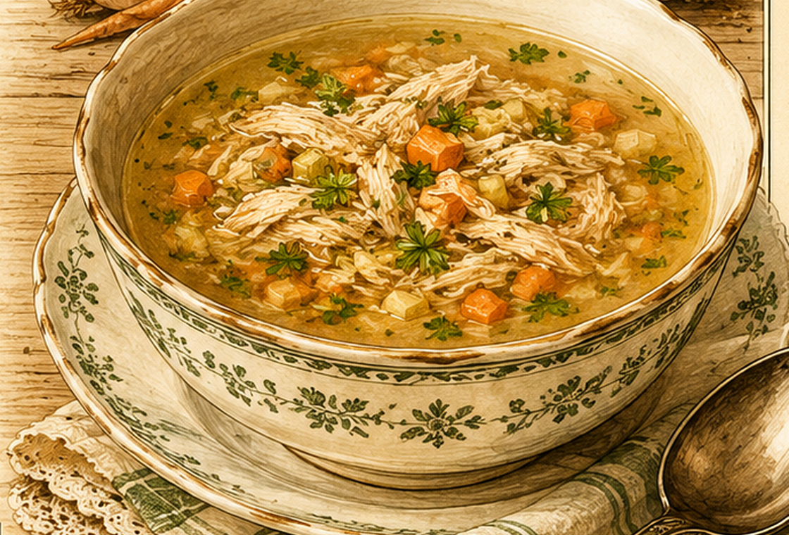

Hühnersuppe
Eine kräftige Brühe aus einem alten Suppenhuhn, Gemüse, Butter und Eigelb.

Originale Überlieferung
Ein großes altes Huhn wird sauber vorbereitet, mit Wasser bedeckt und drei bis vier Stunden gekocht. Die Brühe soll für vier Personen auf etwa 1½ l einkochen. Salz und etwas Suppengemüse kommen hinzu. Kurz vor dem Anrichten werden etwas Butter und ein bis zwei Eidotter zugegeben.
Moderne Übertragung
Das Suppenhuhn wird sehr langsam mit Wasser und Gemüse ausgekocht. Zum Schluss wird die Brühe mit Butter abgerundet und mit Eigelb legiert.
Zutaten
- 1 großes Suppenhuhn
- Wasser zum Bedecken
- 1 EL Salz, später nach Geschmack
- 1 Bund Suppengemüse
- etwas Butter
- 1–2 Eigelb
Zubereitung
- Das Huhn in einen großen Topf legen, mit Wasser bedecken und langsam aufkochen.
- Den Schaum abschöpfen und das Huhn drei bis vier Stunden sanft garen.
- Suppengemüse und Salz während der letzten Garzeit zugeben.
- Die Brühe abseihen und auf ungefähr 1,5 Liter einkochen.
- Butter einrühren. Eigelb mit etwas Brühe angleichen und einrühren; danach nicht mehr kochen.